The Beautiful Sunrise
By Bhanuprathap | Feb 2, 2025
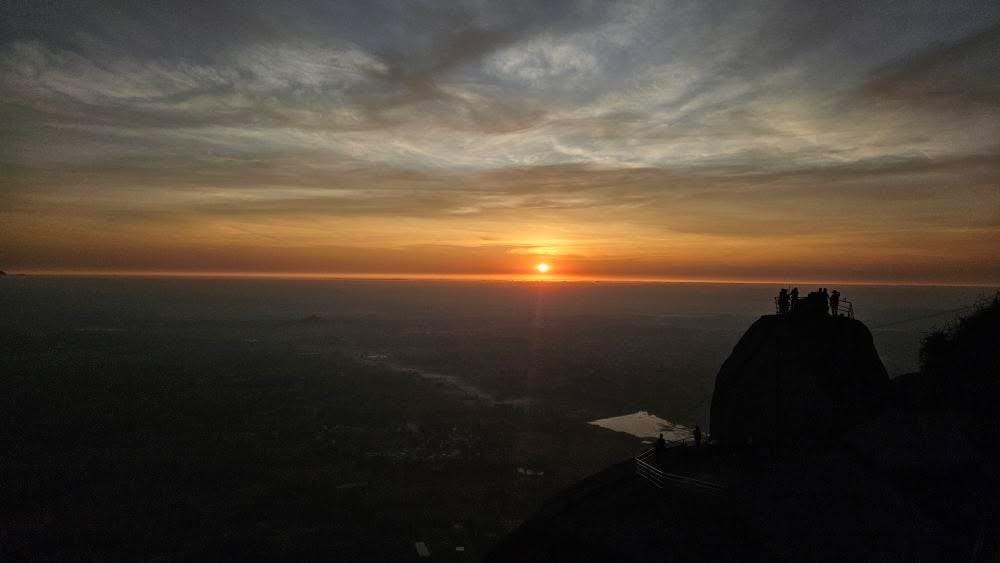
"I dedicate this trek to my parents."
The most beautiful sunrise I've ever seen in my life so far is the Sivagange sunrise. In this blog, I will share my experience and excitement I felt during the trek.
Trekking is not just a modern adventure sport. Since ancient times, people travel for mental clarity and spiritual exploration, stepping away from their regular lives. In Hindu culture, trekking often carries the essence of a pilgrimage. Today, people trek for many reasons — some to test their physical limits, some to challenge their will, some to find peace, some to meet new people, and some to discover themselves. For me, this was my first trek after a very long time where I experienced all of these things.
Before that, what’s the difference between watching the sunrise from your terrace vs trek? A few people have asked me the same question, and honestly, my answer is the meme below (meme). On a terrace, you see only a slice of the sunrise — the sun rising laterally until nearby buildings block your view. But at the peak of a hill, nothing hides the sky. The horizon is wide open. The clouds rest below your feet, the sun rises above them, and the whole world feels like it’s unfolding just for you. Well… except on winter when the fog decides.
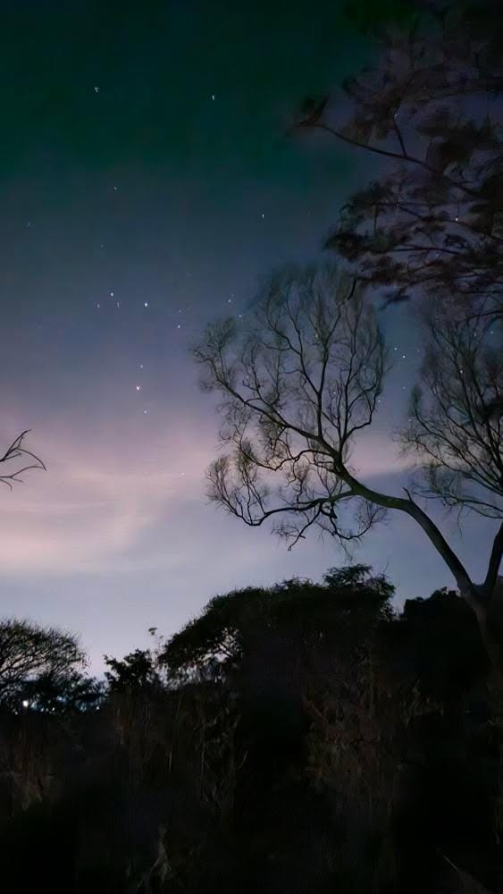
Why is Shivagange my best ?
The perfect angle, the wide open view, and the radiant colors — shifting gently from violet to red
— make a sunrise beautiful and unforgettable. I don’t know if we can witness this magic every time,
but I was lucky enough to experience it early this year.
I’ll share a few photos that capture those beautiful gradient colors.”
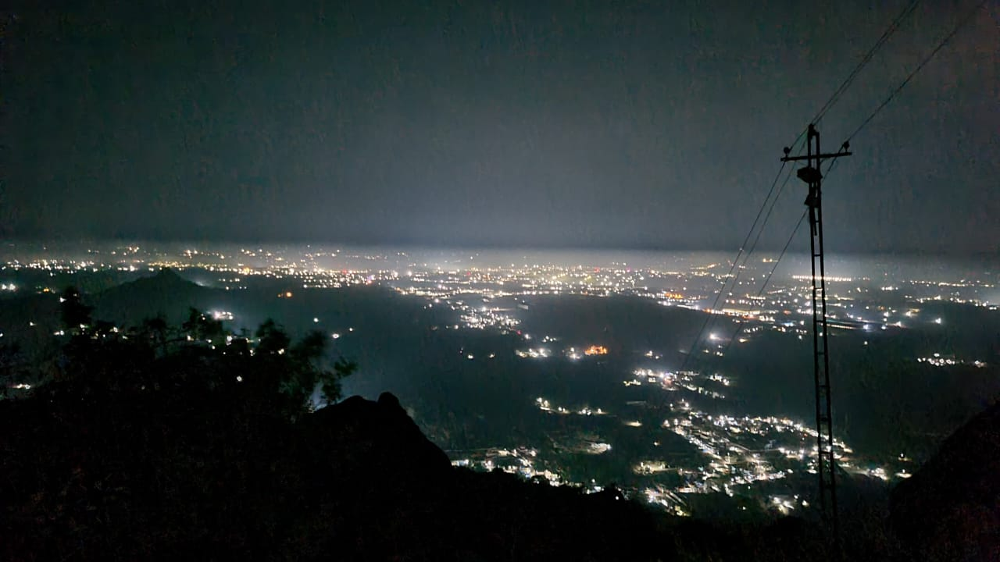
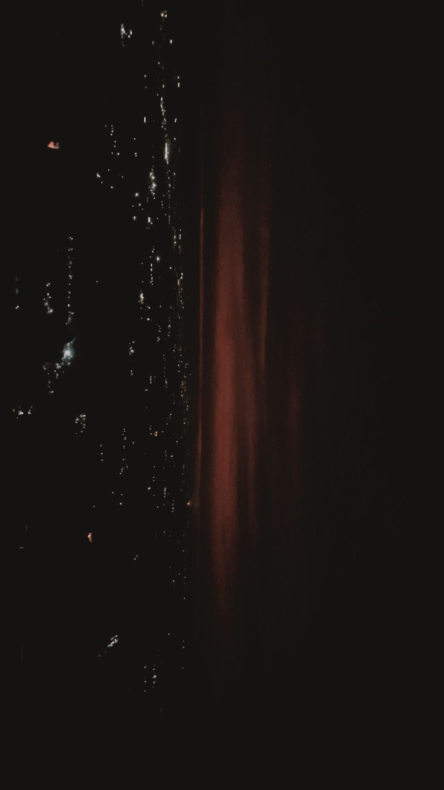
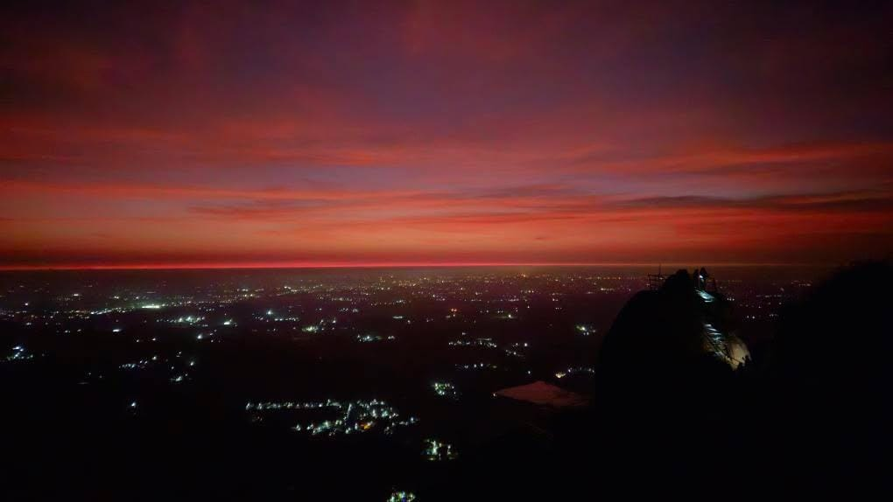
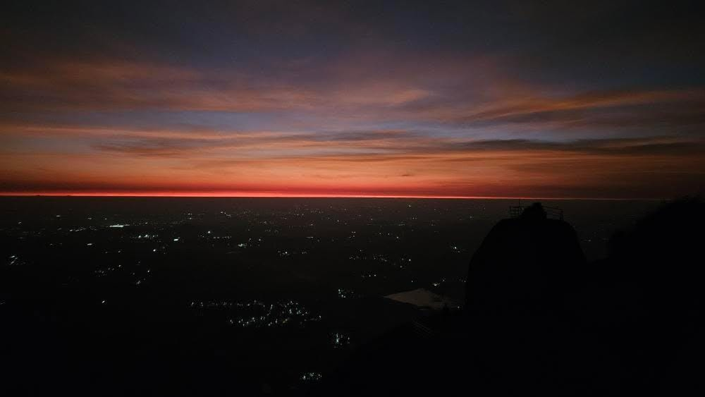
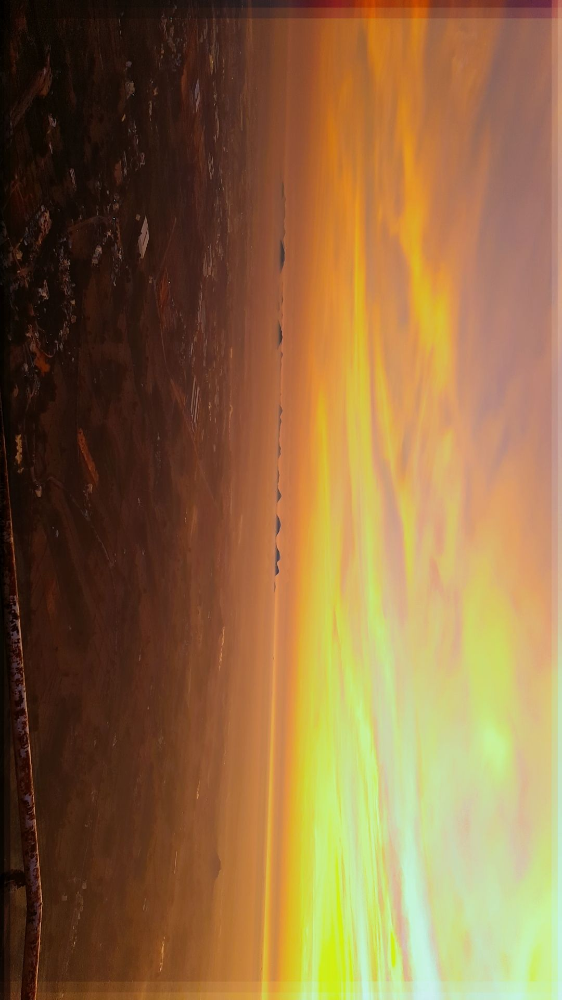
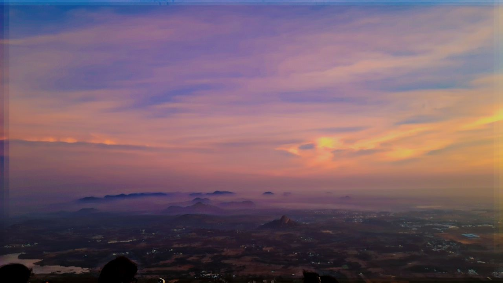
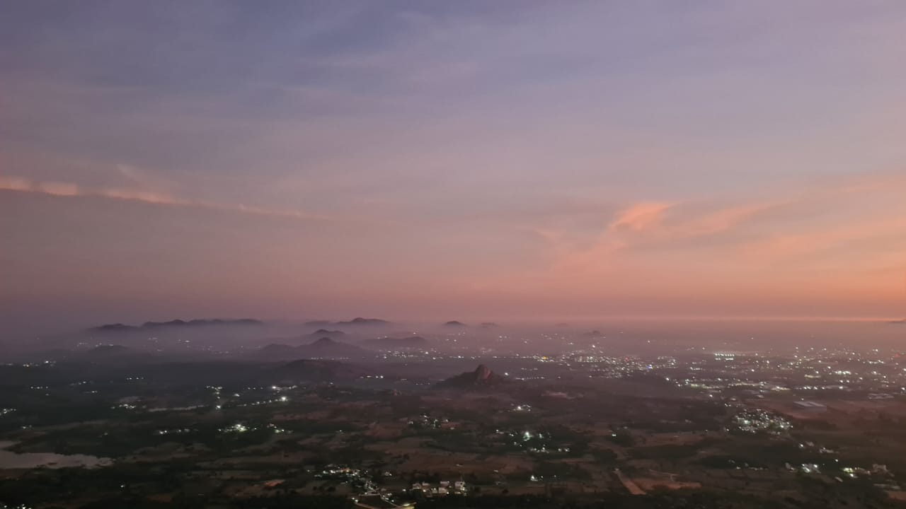
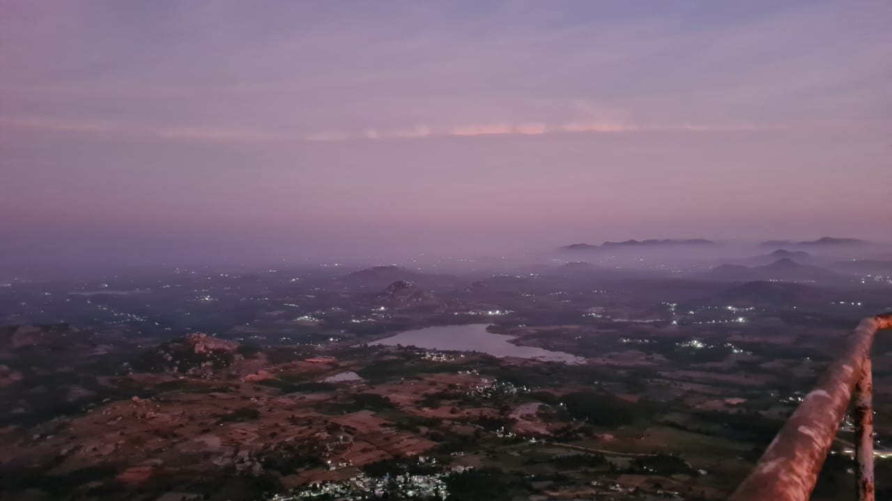
I met two interesting people in the trek, that i wanted to share here.
Kartik bro:
A true trekking enthusiast and an inspiring person in many ways for me.
His career journey and his adventure stories always motivate me to keep moving forward.
I’m genuinely happy for your success na. We’ll definitely plan a trek together in the coming days.
Social Media : Instagram
Sharmadha:
An inspiring soul. She is already far ahead of the goals I set for myself this year
— she runs her own YouTube channel and has completed treks that are still on my checklist,
like Netravati, Kumara Parvatha, and more.
At the pace she’s going, by the time I finish my monsoon-trek list, she might have conquered the entire North!
Wishing you all the best, and hope you become like Muthamil Selvi.
Social Media : Instagram youtube
Follow and support them.
Tamil Selvi is the first woman from Tamil Nadu to reach Mt.Everest summit. Not only Mt.Everest, She has climbed the seven highest peaks from all seven continents. It’s a matter of great pride for us that someone among us has achieved something so extraordinary. ArticleInstagram
Every time I gaze at a sunrise, I feel the silence my mind craves for. Those days, my thoughts drain me more than anything else, and I pray every day for a little quiet inside. Somehow, I find that silence only in these gentle, golden mornings. It’s the only time I feel like I’m giving a shoulder to myself.
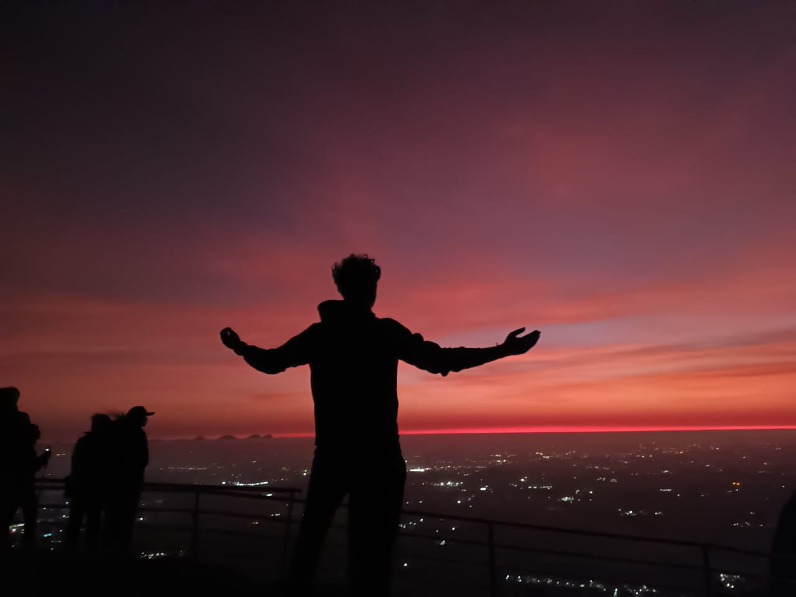
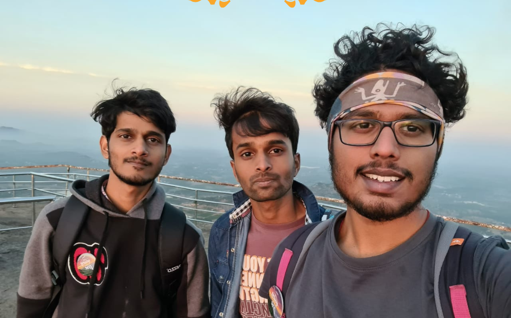
Few clicks around.
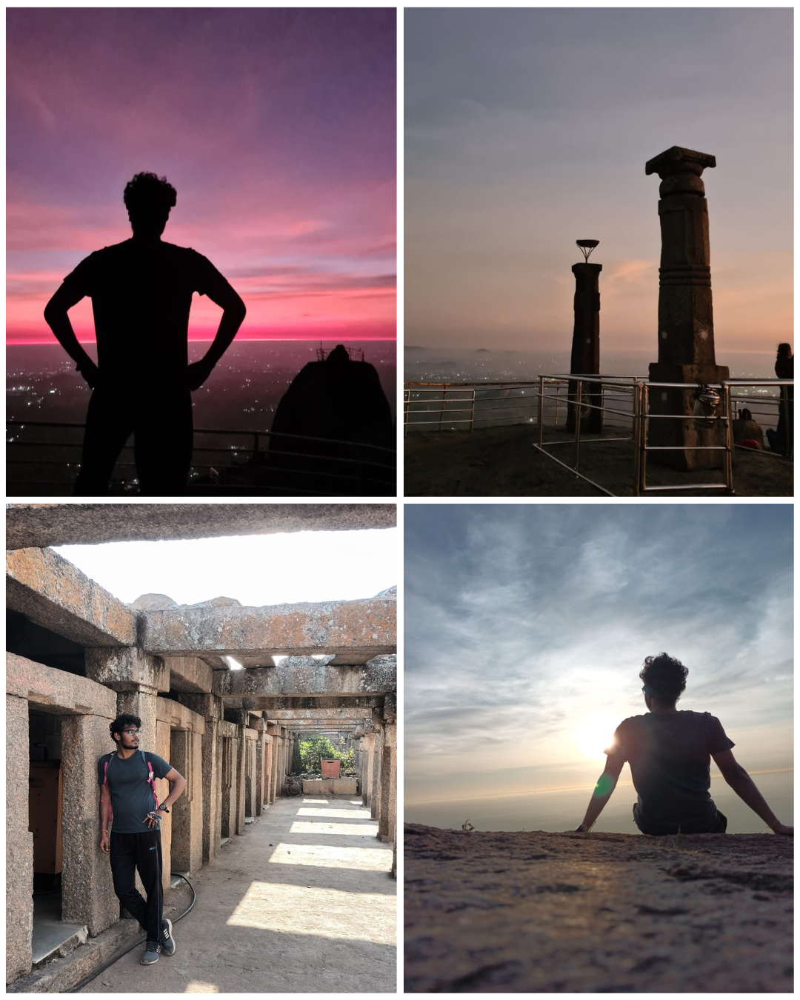
I would recommend everyone to experience this beauty at least once while you’re in Bengaluru. It’s not as hard as it seems — all it takes is one small push, and the journey rewards you more than you expect.
We'd love to hear about your experience! Share your thoughts below: